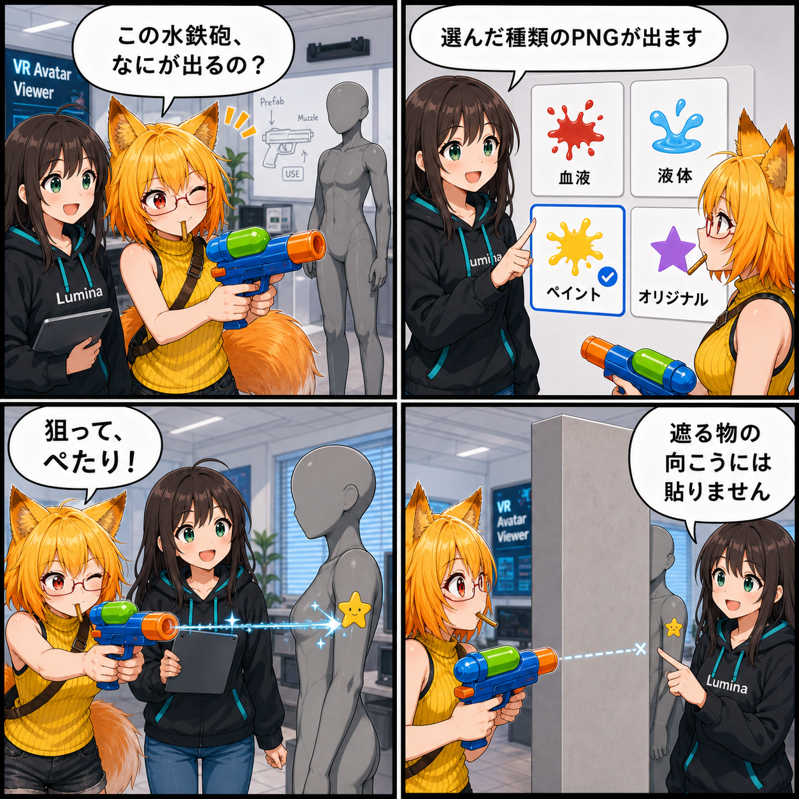

狙って、撃って、ぺたり。ステッカー水鉄砲が登場
アバター表面へPNGステッカーを撃てる組み込みアイテム「ステッカー水鉄砲」を実装しました。VRでもデスクトップでも発射でき、選んだカテゴリの画像を狙った位置へ投射します。
70dc629（「水鉄砲とステッカー機能を拡張」）。対象コミットは1件、集計差分は56ファイル、95,437行追加、72,916行削除でした。行数の大半はUnity Prefabのシリアライズ差分です。Viewer作業ツリーの未コミット差分は、集計期間内の実装と確認できないため実績へ含めていません。集計期間は 2026-08-16 03:00:00 JST から 2026-08-17 02:59:59 JST までです。
ステッカーを「貼る」から「撃つ」へ
前日の開発では、PNGを選び、アバター表面へ直接貼って流せるステッカー機能が形になりました。今回はその仕組みを、手に持って遊べる水鉄砲へつなげています。
「ステッカー水鉄砲」はカメラや鏡と同じ組み込みプリセットアイテムです。シーンへ複数配置でき、Prefab内の銃口（Muzzle）から前方へ射線を飛ばします。VRではGripで持ちながらTrigger、デスクトップでは選択中の水鉄砲に表示される「発射」ボタンが同じ操作になります。
遮蔽物の向こうへは貼らない
発射時は、射線上にあるアバターのうち最も手前の表面へステッカーを投射します。ただし、背景などの遮蔽物が先にある場合は、そこから先のアバターへ届かないよう射線距離を制限します。
見た目には単純な一発でも、どのアバターのどの面に当たったか、途中に遮るものがないかを順序立てて判定する必要があります。既存のSurface Sticker投影処理へ接続したことで、水鉄砲で狙った位置にも表面に沿ったステッカーを置けるようになりました。
4カテゴリからPNGをランダム選択
ステッカーは「血液」「液体」「ペイント」「オリジナル」の4カテゴリに分かれます。発射するたび、選択中カテゴリのフォルダにあるPNGだけからランダムに1枚を選び、別カテゴリとは混ぜません。
候補にはアプリ同梱の Assets/ManagedLibrary/stickers と、ユーザーが追加できる UserData/stickers の両方を統合します。PNG以外は候補にせず、ファイルサイズや画像寸法にも上限を設けて、読めない画像はエラーとして扱います。
組み込み機材をPlayerへ確実に届ける
水鉄砲の外観Prefabは Assets/ManagedLibrary/Items/WaterGun/water_gun.prefab を正本とします。組み込み機材は BuiltinItemAssetCatalog から参照し、通常のUnity Build依存としてPlayerへ含める構成へ整理しました。一方、ステッカーPNGは既存のManagedLibrary機構から扱います。
今回のコミットでは、カテゴリ統合、銃口設定、USE操作の構成を確認するEditorテストも追加しました。Viewerには集計終了後の未コミット差分がありますが、実装時刻を期間内と確認できないため、この記事の実績には含めていません。
4コマの裏話
4コマでは、ろひが水鉄砲を見つけ、ルミナから「選んだカテゴリのPNGが出る」と教わります。ろひがアバターへ狙いを定めて発射すると、ペイントの星がぺたり。最後は、遮蔽物の向こうには貼らない堅実な判定をルミナがさらりと説明する流れです。
まとめ
表面へ貼って流せるステッカーが、シーン内で手に持って遊べる水鉄砲になりました。VRとデスクトップの両方から発射でき、カテゴリ別のPNGライブラリ、遮蔽物判定、最寄り表面への投射までが一つの操作につながっています。
本日のひとこと： 狙いはポップに、当たり判定は堅実に。